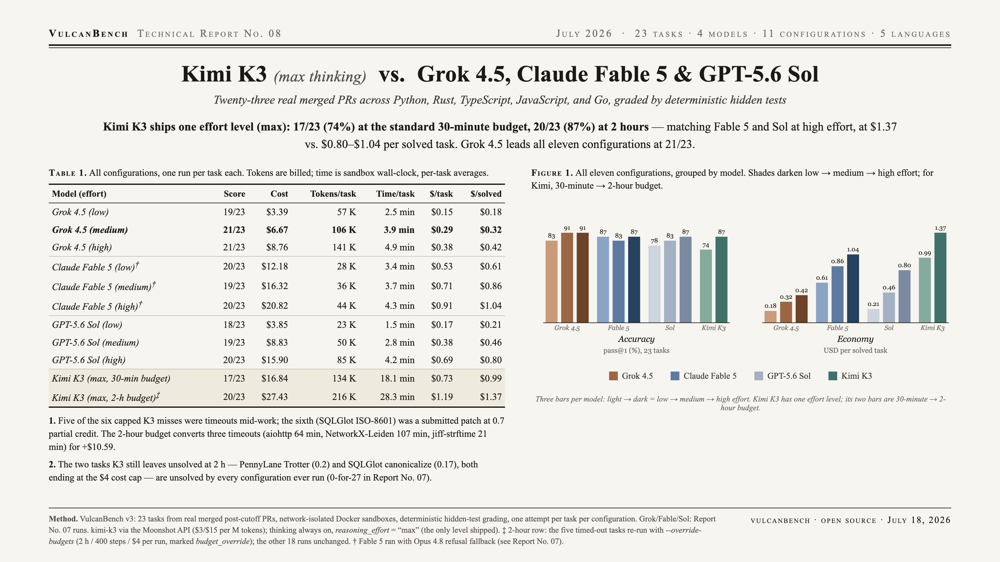

Kimi K3 ships one effort level (max, always-thinking): 17/23 (74%) at the standard 30-minute budget, 20/23 (87%) at two hours — level with Fable 5 and Sol at high effort, at $1.37 vs. $0.80–$1.04 per solved task. Five of its six capped misses were timeouts (the sixth scored 0.7 partial credit); at 18.1 min/task it runs 4–7× slower than the field.

| Model (effort) | Score | pass@1 | Cost | Tokens/task | Time/task | $/solved |
|---|---|---|---|---|---|---|
| Grok 4.5 (medium) | 21/23 | 91.3% | $6.67 | 106 K | 3.9 min | $0.32 |
| Grok 4.5 (high) | 21/23 | 91.3% | $8.76 | 141 K | 4.9 min | $0.42 |
| Claude Fable 5 (low)† | 20/23 | 87.0% | $12.18 | 28 K | 3.4 min | $0.61 |
| GPT-5.6 Sol (high) | 20/23 | 87.0% | $15.90 | 85 K | 4.2 min | $0.80 |
| Claude Fable 5 (high)† | 20/23 | 87.0% | $20.82 | 44 K | 4.3 min | $1.04 |
| Kimi K3 (max, 2-h budget)‡ | 20/23 | 87.0% | $27.43 | 216 K | 28.3 min | $1.37 |
| Grok 4.5 (low) | 19/23 | 82.6% | $3.39 | 57 K | 2.5 min | $0.18 |
| GPT-5.6 Sol (medium) | 19/23 | 82.6% | $8.83 | 50 K | 2.8 min | $0.46 |
| Claude Fable 5 (medium)† | 19/23 | 82.6% | $16.32 | 36 K | 3.7 min | $0.86 |
| GPT-5.6 Sol (low) | 18/23 | 78.3% | $3.85 | 23 K | 1.5 min | $0.21 |
| Kimi K3 (max, 30-min budget) | 17/23 | 73.9% | $16.84 | 134 K | 18.1 min | $0.99 |
‡ 2-hour row: the five tasks that timed out at 30 minutes were re-run with exact budgets of 2 h / 400 steps / $4 per run (runs marked budget_override); the other 18 runs are unchanged. It is an ablation, not a leaderboard config — every other model ran under the standard budget. † Fable 5 ran with Opus 4.8 refusal fallback (see Report 07). Grok/Fable/Sol rows reproduced from Report 07. Tokens are billed tokens; time is sandbox wall-clock.
The clock is the dominant failure mode — not the only one. Five of the six capped misses were timeouts mid-work; the sixth (SQLGlot ISO-8601) was a submitted patch that earned 0.7 partial credit. And the ablation shows time isn’t the whole story: given two hours, three timeouts convert, while the two hardest tasks still end at the $4 cost cap with partial progress.
Always-on max thinking is slow, not verbose. 18.1 min/task against 3.4–4.9 for the field, on moderate token volume (134 K/task). The cost of Preserved Thinking is time; on time-budgeted agentic work, latency is accuracy.
Given time, it closes the gap. At 2 hours, aiohttp (64 min), NetworkX-Leiden (107 min), and jiff-strftime (21 min — run-to-run variance, not time starvation) all fall: 20/23, matching high-effort Fable 5 and Sol for +$10.59.
The difficulty ceiling held. PennyLane Trotter fragmentation (0.2 partial) and SQLGlot internal-name canonicalization (0.17 partial) remain unsolved by every configuration ever run on v3 — 0-for-27 in Report 07, and K3’s two-hour, $4 attempts didn’t crack them either.
| Task | 30-min budget | 2-h budget | Time | Cost |
|---|---|---|---|---|
| aiohttp-upgrade-deferred | × timeout | ✓ solved | 64 min | $2.66 |
| networkx-leiden-communities | × timeout | ✓ solved | 107 min | $4.35 |
| jiff-strftime-negpad | × timeout | ✓ solved | 21 min | $1.14 |
| pennylane-trotter-fragmented | × timeout | partial (0.2), $4 cap | 100 min | $4.78 |
| sqlglot-canonicalize-internal-names | × timeout | partial (0.17), $4 cap | 94 min | $4.12 |
| sqlglot-iso8601-nanos | partial (0.7) | — not re-run | — | — |
The two $4-capped partials ended on money, not conviction — a larger budget might buy more progress, at a meaningfully higher price than any other configuration on the board.
Same 23 v3 tasks as Report 07 (real merged post-cutoff PRs across Python, Rust, TypeScript, JavaScript, Go), graded by deterministic hidden tests in a network-isolated Docker sandbox, one attempt per task per configuration. kimi-k3 via the Moonshot API ($3 / $15 per million tokens, cache-hit input billed here at the cache-miss rate); thinking is always on and reasoning_effort accepts only “max” — Moonshot has announced further levels but not shipped them, so K3 contributes one effort configuration where other models contribute three.
Two harness notes from integrating an always-thinking model: single K3 responses can exceed generic HTTP read timeouts (three solves were initially lost to 120-second judge-call timeouts and recovered with a 900-second provider timeout), and the 2-hour ablation used the new --override-budgets flag, which stamps runs so they cannot be mixed into capped comparisons.
{kind=link}